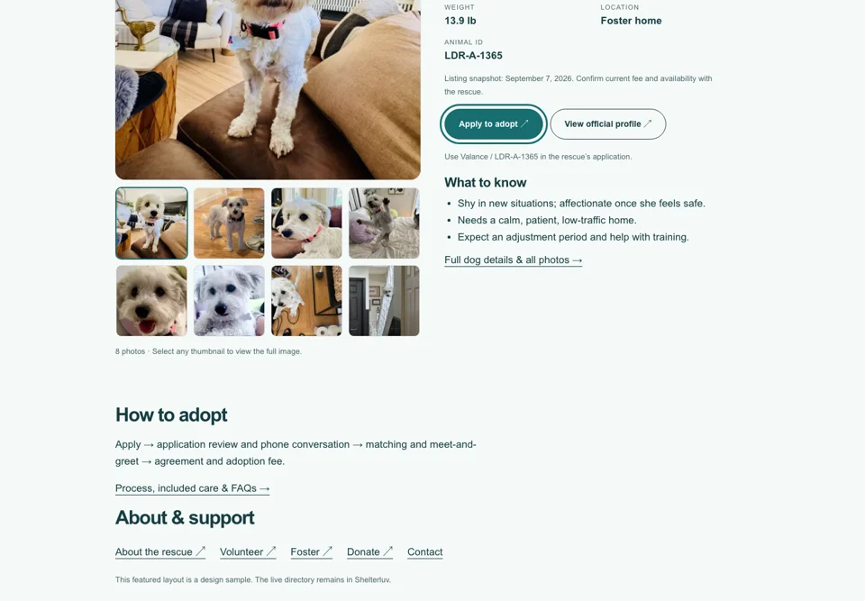
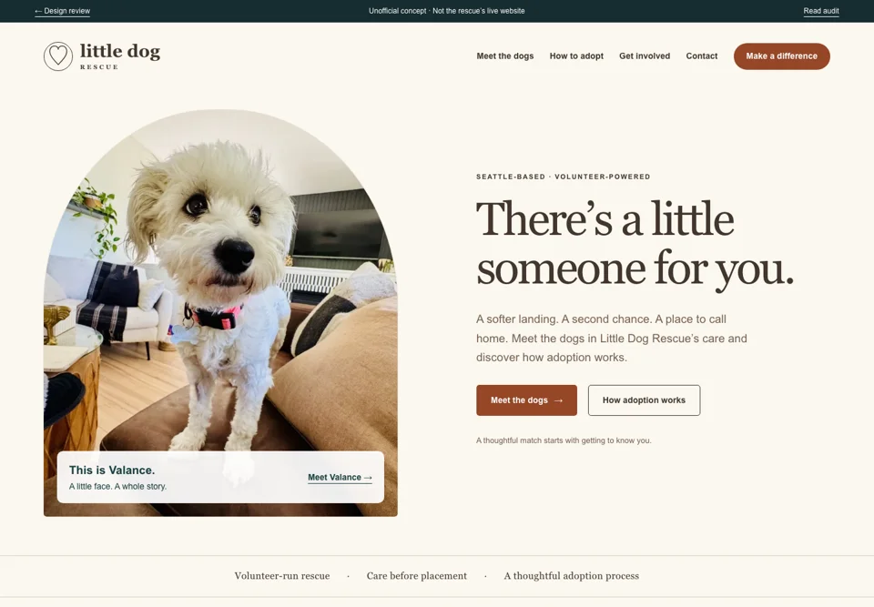
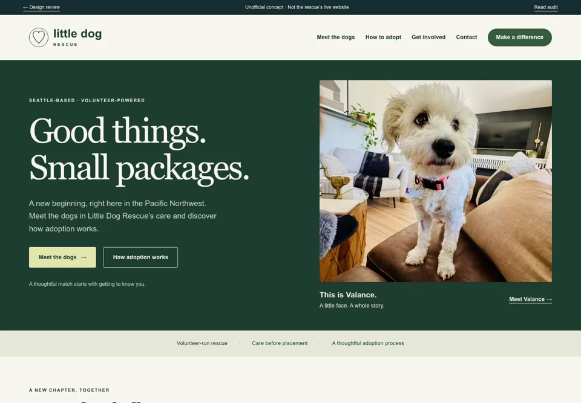

01 · THE CLOSEST BRAND REFRESH
Clear & Kind
Fresh teal, clean typography and a direct path to the dogs. Familiar in spirit, substantially clearer on a phone.
Explore concept 01 →Three design directions for the existing Squarespace 7.1 website. Keep Shelterluv, the dog records, applications and current operational tools. Improve the experience around them.

Fresh teal, clean typography and a direct path to the dogs. Familiar in spirit, substantially clearer on a phone.
Explore concept 01 →
Soft cream, terracotta and a gentle editorial voice. Feels personal, welcoming and focused on each dog’s story.
Explore concept 02 →
Forest green, thoughtful typography and bolder contrast. A grounded, outdoors-adjacent identity without losing warmth.
Explore concept 03 →Send feedback to the person who shared this preview. There is no feedback form or tracking added here. Dog photos and profile facts are public-source snapshots, not promises of current availability. The live dog directory loads Shelterluv and its own services. These are browser prototypes, not an installed Squarespace theme.
Preview pages request no indexing. This is not password protection; anyone with a hosted link could view them.